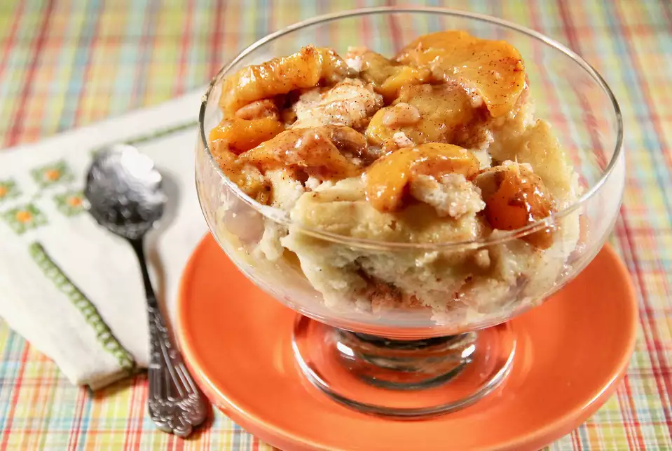

Peach Cobbler

This is a yummy, easy peach cobbler recipe that is a favorite with our family of eight.
You may use up to 5 cups of peaches.
Ingredients
- 1/2 cup butter, melted
- 4 cups fresh peaches - peeled, pitted, and sliced
- 2 tablespoons white sugar
- 1 cup white sugar
- 1/4 teaspoon salt
- 1 teaspoon baking powder
- 1 cup all-purpose flour
- 1 teaspoon ground cinnamon
- 1/2 cup milk
Steps
- Preheat the oven to 350 degrees F (175 degrees C). Pour melted butter into the bottom of a 9x13-inch dish.
- Toss together peaches and 2 tablespoons sugar in the prepared dish.
- Stir together 1 cup sugar, salt, baking powder, flour, cinnamon, and milk in a mixing bowl. Spoon batter over peaches.
- Bake in the preheated oven until top is golden brown, about 45 minutes.